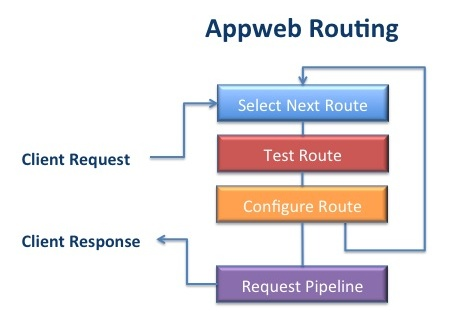
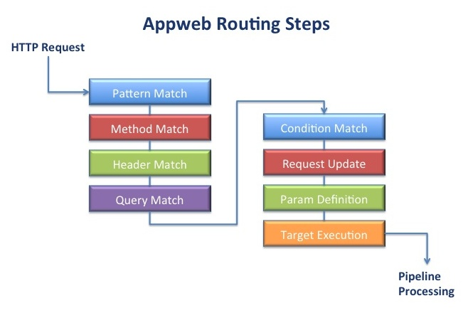

Quick Nav
See Also
Routing Requests
Overview
Appweb includes a powerful request routing engine that processes client Http requests. The engine maps and transforms the request for the appropriate route to handle the request. In the process, routes may redirect or rewrite the request as required.
An Appweb configuration will typically have many routes. When a request is received, the configured routes are tested in-order by matching the route pattern against the request URI. The first matching route will earn the right to process the request.
Once selected, a route may require that further conditions be met before it is suitable to process the request. If the required conditions are not met, the next route in the configuration will be tested. There is always a catch-all route that will process the request if all prior routes fail to qualify.
A route may modify the request during processing by changing the request URI or request data. The route may also run commands as a side-effect during processing.
Route Configuration
Routes are defined in the appweb.conf configuration file or via API and are processed at run-time when client requests are received. A route defines the complete set of instructions for processing a request and serving a response back to the client.
The most fundamental is the Route block directive which declares a new route block and defines the route matching pattern:
<Route /info/> </Route>
This example defines a route pattern /info/ that will serve request URIs that begin with "/info/". The route pattern is a regular expression pattern that is used to match against the client request URI. If the route pattern matches the URI, the route is selected to process the request.
Route Ordering
When multiple routes are defined in the configuration file, a client request will test each route in the order in which they are declared in the configuration file. So ordering is very important. Routes with longer or more qualified route criteria should be defined first before more general routes.
Route Nesting
Routes can be nested where route directives are placed inside outer route blocks. The inner route will inherit the configuration that existed at the point the open route block directive appears in the configuration file.
When a route block is defined, it is not added to the list of routes until the closing </Route> directive is encountered. This means that inner route blocks will be correctly defined before their outer route block. For example:
<Route /info/>
DocumentRoot /public-docs
<Route /info/private/>
DocumentRoot /confidential-docs
AuthType digest
AuthName "Top-Secret"
Require valid-user
</Route>
</Route>
This example assigns different physical directories for public and private information and secures the private information with digest authentication. The inner /info/private route will be defined before the /info route and will be matched against the request URI before the /info route.
Default Route and Virtual Hosts
A hidden route is defined at the very top of the appweb.conf configuration file. This is the default route and all routes ultimately inherit from it. Route related directives outside a route block will configure and modify the default route.
VirtualHost directives also define implicit route blocks. In this way, they inherit the route configuration that existed at the point in the configuration file where the VirtualHost is defined, but they can override this to create a unique route configuration for the virtual host.
Route Directives
Other route related configuration directives include: MOB - need links to the actual directive definitions
RouteName
Routes may be given a symbolic name which is used when displaying routes in the log file via the LogRoutes directive. The symbolic name is also used by some APIs to lookup routes by name.
DocumentRoot
The base filesystem directory for a route can be defined via the DocumentRoot directive. Requests that map to physical files are then made relative to the DocumentRoot.
Methods
A route can define the set of valid Http methods via the Methods directive. The Http methods are: DELETE, GET, OPTIONS, POST, PUT and TRACE. The Methods directive can also take an argument of "ALL" or "*" to select all possible methods.
Header
Header directives can define a required header and value for the route to be selected. The header value can also be negated by prefixing the name with "!". This negating also works for the Condition directive. A route may have any number of header directives.
Condition
The condition directive can define condition test that must be true for the route to be selected. Conditions have three test rules: exists, directory and match. The exists rule evaluates if the condition filename argument exists in the file system. The directory rules evaluates if the filename is a directory. The match rules tests the string argument against a regular expression pattern. A route may have any number of condition directives.
Update
The update directive modifies the request or environment. Updates have two rules: field and cmd. The field rule can be used to set request params (environment / form variable) to a specific value. The cmd rule can be used to run external commands.
Different web frameworks handle request parameters differently. For CGI, request parameters are mapped to environment variables, for PHP they are mapped to server variables. For ESP they are mapped to Form variables and for Ejscript, they are mapped to request params[s].
Target
The target directive specifies what action the route will take to respond to the request. The target directive has five rules: close, file, redirect, virt, and write. The close rules is used to immedately close a connection without responding to the client. This can be used to stemm denial of service attacks. The file rule is used to respond to a request with a physical file. The redirect rule is used to redirect the request to another URI. The virt rule is used to respond to requests that are "virtual" and do not directly map to a physical file. The write rule is used to respond to the client with literal text and is very useful for debug responses.
Prefix
The prefix directive removes a prefix string from the request URI. This is often used to remove the route pattern from the URI.
Reset
If a route needs a completely clean configuration, the Reset routes directive can be used to remove all inherited configuration.
LogRoutes
The LogRoute directive will display the route table to the error log.
AddHandler and SetHandler
The AddHandler directive defines an Appweb handler for the route which will be used when the request extension matches one of the AddHandler extension arguments. The SetHandler directive defines the Appweb handler to be used for the route regardless of the URI extension.
Route Processing
To process a request, The Appweb route engine examines each of the configured routes to determine the best matching route for a request. It does this by considering the routes in-order through a sequence of steps. If a route fails to match at a step, the route is discarded and the next route is considered. Not all steps are required. However, the selected route will always perform pattern match, param definition and target execution.
Routing Steps
- Pattern Matching — Test if the request URI matches route pattern.
- Optional Method Matching — Test if the request method is valid.
- Optional Header Matching — Test if the request has the require headers.
- Optional Query Field Matching — Test if the request query has required values.
- Optional Condition Matching — Test if the required conditions are true.
- Optional Updates — Modify the request with specified updates.
- Param Definition — Define tokens as request parameters.
- Target Execution — Select the Appweb handler and determine the target resource.
Pattern Matching
A route pattern is a specially prepared regular expression that can be quickly matched against the request URI. The route pattern may match the entire request URI, just the a subset at the start of the URI or any portion in between. Regular expressions are ideal for route patterns as they can express a wide variety of URI formats and can also extract sub-expressions for later evaluation.
Often the request URI will not only provide a path to a resource, but it will contains tokens of information that must be isolated and extracted from the URI. Appweb route patterns provide an easy and efficient means to extract such tokens and define as request parameters (environment/form variable) to pass to the request. To do this, Appweb route patterns extend the standard regular expression syntax via embedded tokens.
A token is a portion of the URI that is enclosed in braces "{token}". The token name is a symbolic name that will be used later to define a request parameter. In the request URI, any sequence of characters except "/" are acceptable in the token name. For example the route pattern:
/{controller}/{action}
will match the URI:
/user/login
After pattern matching, the form variable controller will be set to "user" and action will be set to "login".
To enable the extension token syntax, the standard regular expression syntax for repeat sub-expressions that uses braces: {m,n} needs to be back-quoted. i.e. \{m,n}.
Sub-Expressions
In addition to route tokens, standard regular expression sub patterns can be defined by wrapping a sub-expression in parenthesis. For example:
/(user|admin)/{cmd}
This will allow URIs that begin with either /user or /admin. Sub-expression and token values are made available to Conditions, Updates and Targets by using $N in the directive details. The first sub-expression or token is assigned to $1, the second to $2 and so on. If a request with the URI /user/login was received, the route above would set $1 to "user" and $2 to "login".
Conditional Sub-Expressions
Conditional sub-expressions can be defined by wrapping in "(~" and "~)". This means the wrapped sub-expression is valid but not required. For example:
/{controller}(~/{action}~)
will match any of the URIs:
/user /user/ /user/login
Anchoring Route Patterns
It is wise to anchor route patterns to the start of the URI. This is done by using the "^" character at the start of the URI. If the pattern describes the full request URI, the pattern can anchor to the end of the URI by appending "$". For example:
^/{controller}(~/{action}~)$
Method Matching
Method matching is an optional step. Routes can be configured to only match certain HTTP methods. Method matching tests the supported route methods against the actual request HTTP method. By default a route supports all methods
Header Matching
Header matching is an optional step. Routes can be configured to require that the request has HTTP headers with or without defined values. For example: a route may wish to only be relevant for a particular browser:
<Route /info/>
Header User-Agent /Chrome/
</Route>
Query Field Matching
Query field matching is an optional step. Routes can be configured to require that the request has URI query data with or without defined values. NOTE: Route matching occurs before POST data has been received from the client, so routes cannot discriminate based on POST data fields.
<Route ^/info/>
Query name /(Mary)|(John)/
</Route>
This route will match the URIs:
/info/file.html?name=Mary /info/file.html?name=John
Condition Matching
Condition matching is an optional step where extra conditions can be tested before the route is selected.
Conditions can test if a file exists or not and whether a file is a directory or not. Condition rules can also test any request parameter against a regular expression.
Request Update
Request update matching is an optional step where the request parameters can be modified. Request parameters are the query and post data fields and other environment variables.
Param Definition
After a route fully qualifies, request parameters are created for route pattern tokens. This provides an easy mechanism for extracting useful information from the request URI and passing it to the web page or controller for processing.
Target Execution
Prefix Removal
If Appweb is running several applications, Appweb will need to be able to route and distinguish requests for each application. There are two primary ways to achieve this: run each application in a separate virtual host or uniquely prefix the URIs for each application. If using the latter approach, routes can be defined for each application that specify the URI prefix for each application. However, it is often convenient to have the application prefix removed from the URI once the route is selected. The Prefix directive defines a URI prefix that will be stripped from the start of the request URI once the route is selected. If the route defines a header, field or condition that is not satisfied, the prefix is restored to let other routes see the full URI.
Handler Selection
One the route has matched the pattern and performed method, header and query matching, the route will select a handler. If a route has an explicit handler set via SetHandler then that will be used. If a set of handlers are defined via AddHandler, then the handler defined with the corresponding URI extension will be selected.
Targets
After handler selection, the route will run necessary updates before invoking the target rule. Route targets have responsibility to generate the actual response to the client. The target directive has five possible rules: close, file, redirect, virt and write. Of these, all except for the close rule take parameters that are expanded using the matching sub-expressions and/or route tokens derrived when matching the route pattern.
Target rule parameters can use "${token}" to be replaced with the value of the token. Target rule parameters can also use "$N" to be replaced with the Nth matching sub-expression, "$&" to be replaced with the entire matched pattern, "$`" to be replaced with the portion that preceeds the matched pattern and "$'" to be replaced with the portion that follows the matched pattern. For example:
Target write 200 "Running controller ${controller} action ${action}\n\n"
This will write the message back to the client with a HTML status code of 200 .
Note: to be more secure, the write rule will escape embeded HTML sequences. If you need to emit HTML, use the -r switch for raw write output.
Route Examples
filename formation
URI rewriting
Language mapping
Use Cases
- Redirecting URIs
- Authentication of private content
- Hiding extensions
- Serving compressed content
- Multi-language
- Routes just for one browser
- Route for an application
- Denial of service
- Missing file
- Route stages
- Pattern match
- Prefix removal
- Method match
- Headers
- Query fields
(Not post fields) ? what if www-url-encoded?
- Handler selection
AddHandler by extension, SetHandler
- Conditions
- missing, directory, exists, match
- Updates
- cmd, field
- Target
close file, redirect, virtual, write,
- Token Vars
- Param Vars
- Tokens
- Regular Expressions and Patterns
- Route links
- Separate page
- Languages
- DefaultLanguage
- AddLanguageRoot
- AddLanguage
- Auth
- Compress
- Examples
- Extending
- Adding conditions, updates, target rules
- httpTokenize
- Adding custom directives